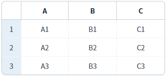
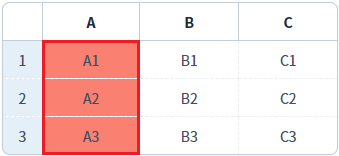
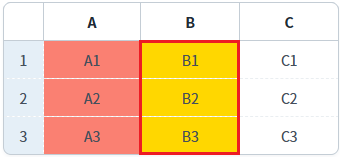

GridView의 'setColumnBackgroundColor' 메소드를 사용하여 특정 열의 배경색을 설정하는 예제입니다.
바디 컬럼의 인덱스로 배경색 설정하기
바디 컬럼의 아이디로 배경색 설정하기
1
STEP 1: 초기 상태를 확인합니다.
화면에 표시된 GridView의 바디 컬럼의 아이디는 다음과 같습니다.
Example 1.GridView의 바디 컬럼의 아이디
A: col_a B: col_b C: col_c
Image 1.브라우저(Chrome) 실행 예시

2
STEP 2: 바디 컬럼의 인덱스로 배경색 설정하기
"열의 배경색을 'salmon'으로 설정하기 - body column의 index 사용" 버튼을 클릭합니다.3
STEP 3: 실행된 결과를 확인합니다.
GridView의 헤더명이 'A'인 컬럼의 배경색이 변경됩니다.
Image 2.브라우저(Chrome) 실행 예시 - GridVeiw

4
STEP 4: 바디 컬럼의 아이디로 배경색 설정하기
"열의 배경색을 '#FFD700'으로 설정하기 - body column의 id 사용" 버튼을 클릭합니다.5
STEP 5: 실행된 결과를 확인합니다.
GridView의 헤더명이 'B'인 컬럼의 배경색이 변경됩니다.
Image 3.브라우저(Chrome) 실행 예시 - GridVeiw

GridView의 'setColumnBackgroundColor' 메소드를 사용하여 스크립트를 작성합니다. 세부 설정은 아래의 스크립트 예시에 작성되어 있습니다.
Example 2.Script
//예제 파일에서는 스크립트 scwin.btn_exam1_onclick에 작성되어 있습니다. //GridView 'grd_exam1'의 바디 컬럼의 index가 0번째인 컬럼의 배경색을 'salmon'으로 설정하기 grd_exam1.setColumnBackgroundColor(0, "salmon");
GridView의 'setColumnBackgroundColor' 메소드를 사용하여 스크립트를 작성합니다. 세부 설정은 아래의 스크립트 예시에 작성되어 있습니다.
Example 3.Script
//예제 파일에서는 스크립트 scwin.btn_exam2_onclick에 작성되어 있습니다. //GridView 'grd_exam1'의 바디 컬럼의 'id'가 'col_b'인 컬럼의 배경색을 '#FFD700'으로 설정하기 grd_exam1.setColumnBackgroundColor('col_b', "#FFD700");
setColumnBackgroundColor( colIndex , color )